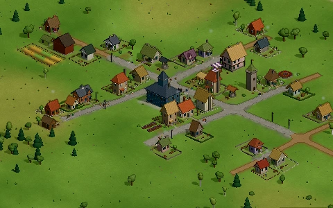

Starter towns

Found a village in an empty valley, or take over one that's a few weeks along: a riverside hamlet, a market village, a mill town, a crossroads village, the Cathedral city, ten years on with some 3,000 villagers round a domed Capitol, or the Metropolis: the most people a valley can hold, some 47,000 of them round the Houses of Parliament.
Starter towns in the wiki →